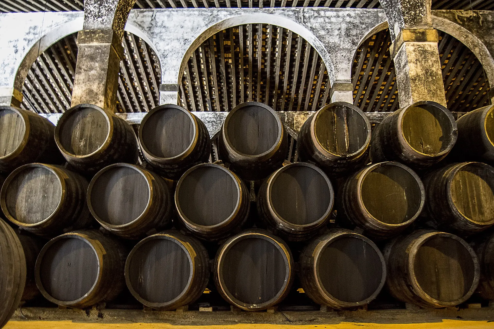
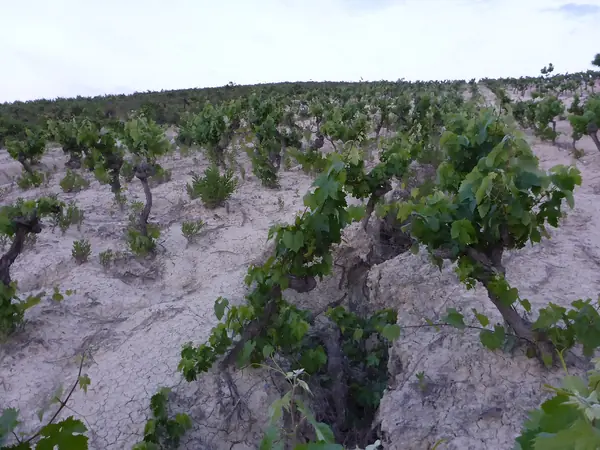

Tres andanas desde 1931
Somos una bodega pequeña del barrio de Santiago, en Jerez. Criamos cuatro vinos en ciento ocho botas y abrimos la puerta a quien quiera ver cómo se hace.

La historia, en cinco fechas
1931
La familia compra un almacén de grano en la calle Cinco Sextos. Tiene el techo alto, muros gruesos y ventanas al poniente: lo que pide una bodega. Ese invierno entran las primeras treinta botas; la primera de todas es una bota chica, de las de quinientos litros que se usaban para embarcar el vino, más pequeña que las de seiscientos de la nave, y de ella le viene el nombre a la casa. Sigue en la sacristía.
1959
Se arma la segunda solera, la del oloroso, con botas compradas a una bodega que cerraba. Desde entonces la nave tiene dos vinos y dos ritmos de saca.
1988
Se abre la puerta a las visitas. Al principio eran amigos de amigos; luego, cualquiera que llamara al timbre por la mañana.
2009
La tercera generación decide no crecer: ni una bota más de las que se pueden cuidar a mano, y nunca sacar más de lo que la solera aguanta.
2026
Ciento ocho botas en tres andanas, cuatro vinos, cinco visitas y la misma puerta de madera de 1931.
El lugar
La nave está orientada para que entre el poniente, el viento húmedo que llega del Atlántico y que le sienta bien a la flor. En verano se riega el suelo de albero y se bajan las esteras de las ventanas para que el aire se quede fresco.
La uva viene del pago de Macharnudo, al norte de Jerez, donde la tierra es albariza: blanca, caliza, capaz de guardar el agua del invierno. Se la compramos cada septiembre a dos viticultores que la vendimian a mano.


Quién hace qué
Capataz
Paco lleva la solera desde 2004. Decide cuándo se saca, prueba cada bota con la venencia y marca con tiza lo que va a ser cada vino.
Arrumbadora
Pepa mueve las botas, rocía de una andana a otra con la canoa y la jarra, y sabe por el sonido si una bota está llena.
Visitas
Inés enseña la nave, da el taller de venencia y lleva el libro de reservas, que sigue siendo de papel.
Somos tres personas y una familia que echa una mano en vendimia. No ponemos caras: preferimos que conozcas a cada uno en la nave.
Lo que no cambiamos
- Sin añadas
- Todo sale de una solera. La edad que ponemos en la etiqueta es la media de la mezcla, calculada saca a saca.
- Un tercio, como mucho
- Del fino nunca sacamos más de un tercio al año y del oloroso un quinto. Si la solera no da más, no hay más botellas.
- La sacristía no se vende
- Las botas más viejas se quedan en la nave para probarlas allí y para refrescar, de vez en cuando, las soleras jóvenes.
- Se vende en la puerta
- No hacemos envíos ni vendemos en tiendas. Cada botella sale de la bodega con alguien que sabe cómo guardarla.